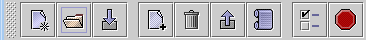

Add one or more files to the current archive.

The toolbar buttons perform the same action as their associated menu items.
New Archive
Creates a new, empty archive file.
Open
Archive
Opens an existing archive file.
Close
Archive
Close the archive you are currently working with.
 Add
File(s) to Archive
Add
File(s) to Archive
Add one or more files to the current archive.
Remove
Selected File(s)
Remove a file from the current archive.
Extract
Archive
Extract the contents of the current archive
to a given location.
View
selected file
Opens the selected file in the Text Viewer.
Options
Set various program options.
 Quit
Quit
Quit the program.